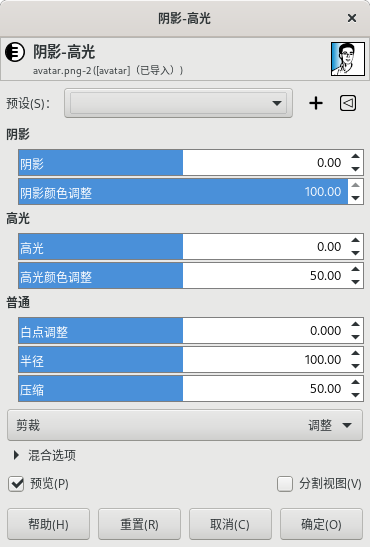

颜色→阴影-高光
此工具没有快捷键。
此工具可以分别调整图像中的阴影区域和高光区域。

颜色→阴影-高光
预设
此选项是通用参数，详细说明请参考图层→透明⇒对话框通用参数。
阴影
调整图像的阴影区域的选项：
阴影：控制图像阴影区域的亮度；正值会使阴影区域变亮，负值会使阴影区域变暗。
阴影颜色调整：控制图像阴影区域的饱和度；值增加会使被提亮的阴影区域的饱和度增强；值减小会使被提亮的阴影区域的饱和度降低。一般情况下，将其保持在默认值100%是安全的，这会为阴影区域提供一个接近自然的饱和度提升。
高光
调整图像的高光区域的选项：
高光：控制图像高光区域的亮度，正值会使高光区域变亮，负值会使高光区域变暗。
高光颜色调整：控制图像高光区域的饱和度；值增加会使被变暗的高光区域的饱和度增强；值减小会使被变暗的高光区域的饱和度降低。通常情况下，高光区域包含的色彩信息可能不够多，导致在变暗后无法提供足够的色彩。您需要根据不同的图像来尝试不同的参数组合。有一点请了解，就是结果未必能令人满意。
普通
同时调整阴影区域和高光区域：
白点调整：在某些情况下，图像可能包含白点以外的色调信息，即亮度{luminance}值超过100。向左移动白点滑块可以使这些值降到合适的范围，从而使高光部分的细节更加突出。
半径：此参数可以控制模糊滤镜的半径。数值增大可以使阴影区域和高光区域之间的过渡更加柔和，但可能会产生光晕{halos}；数值减小会减少光晕的大小，但可能会让人感觉不太自然。
压缩：此选项可以控制效果延伸到中间色调的强度；高值会降低对阴影和高光区域的影响； 较低的值会对中间调区域产生强烈的影响。通常只有当您想将效果限制在阴影和高光区域时才需要调整这个参数。
混合选项/预览/分割视图
这三项是通用参数，详细说明请参考图层→透明⇒对话框通用参数。